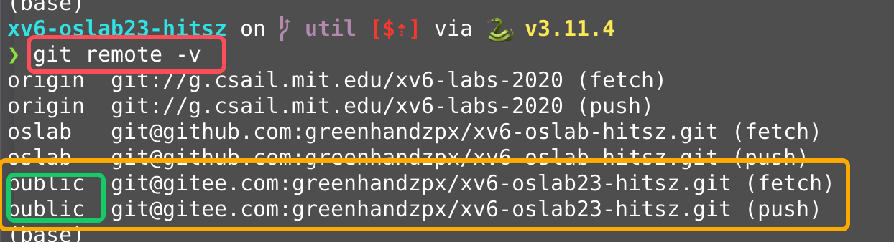
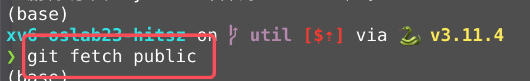
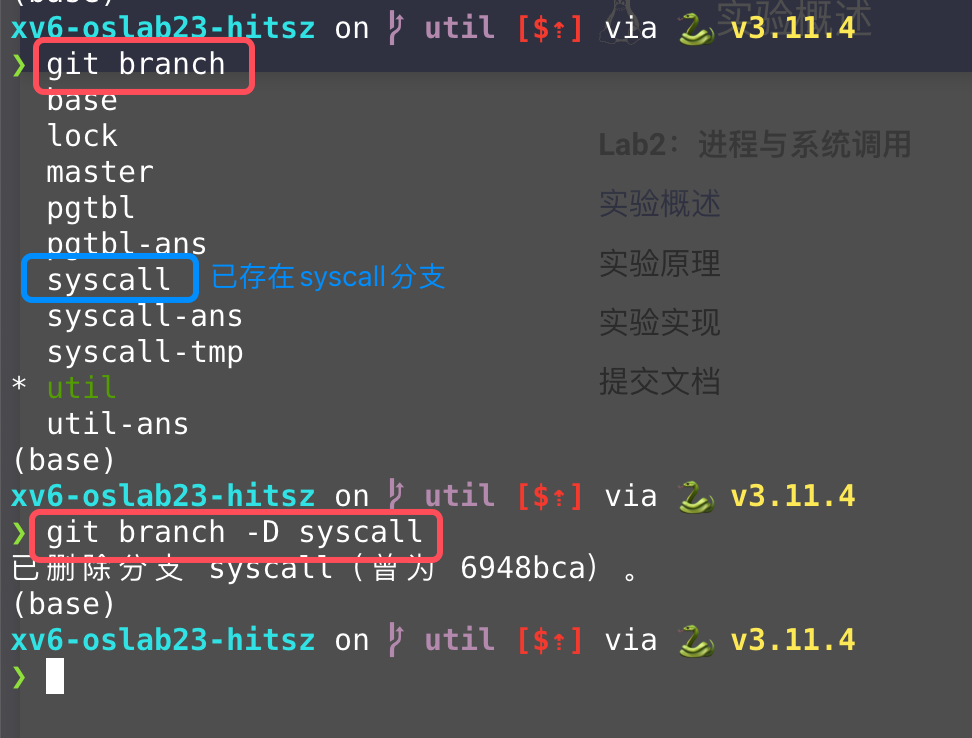
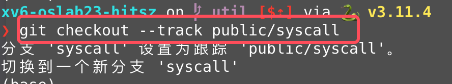
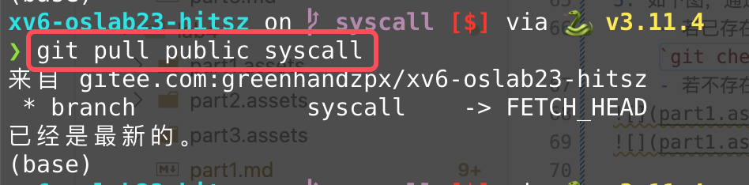
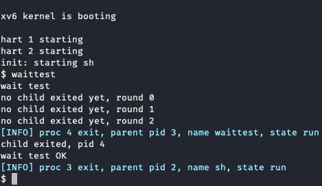
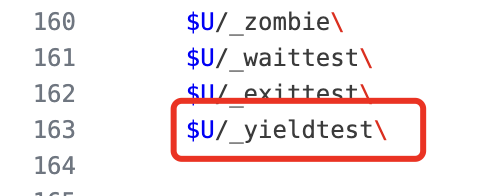
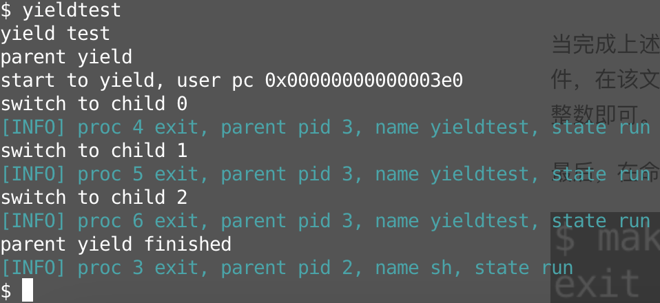
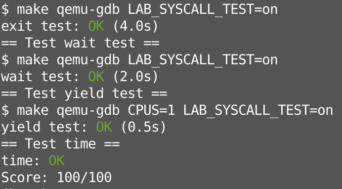

实验概述¶
温（守）馨（住）提（红）示（线）
本课程实验已引入代码自动查重系统，请同学们保持学术诚信！
提示
本节实验与理论课的 导论与操作系统结构 和 进程与线程：进程 这两章课程内容相关，在开始实验前，请复习这两章课程内容。
-
特别推荐同学们观看我校的XV6讲解视频：
- HITSZ操作系统课程组讲解XV6（二）进程管理
- 课程PPT: 点这里下载
-
B站上的MIT 6.S081/Fall 2020课程视频：
-
xv6 book, Sections 4.3 and 4.4 of Chapter 4
- 推荐同学们用GDB跟踪XV6系统调用过程，详细步骤请查看VSCode调试系统调用指南
1. 实验目的¶
本节实验的目的是对操作系统的系统调用模块进行修改，尽可能在真正修改操作系统之前，先对操作系统有一定的了解。
- 了解xv6系统调用的工作原理。
- 熟悉xv6通过系统调用给用户程序提供服务的机制。
- 熟悉进程上下文切换的过程。
- 了解进程的完整生命周期。
2. 实验学时¶
本实验为4学时。
3. 实验内容及要求¶
实验要求可以参考MIT XV6 lab2和lab4提供的部分官方说明：[Lab: System calls(mit.edu)] 、[Lab: Trap(mit.edu)]， 但请以指导书为准，否则可能无法通过测试！
3.1 切换分支¶
请先同步上游远程仓库，并注意切换到syscall分支进行试验
本次实验基于syscall分支，请同学们注意切换。
Step 1. 首先，保存实验一的代码，请参考实验实用工具的3.3.1 使用命令行完成操作或者3.3.2 使用VSCode内建的图形化界面完成操作这两小节，完成commit操作。或者， 如果你希望直接放弃掉上一次commit后的所有更改 ，那么你也可以使用-f选项强制切换分支，例如git checkout -f syscall。
Step 2. 切换的方法可以参考实验 -> 实验实用工具 -> 3.1同步上游仓库 ~ 3.3.3 合并冲突更改。
同学们也可以按照如下步骤进行分支切换：
-
如下图，通过
git remote -v可以看到此时关联的所有远程仓库，然后从中找出对应的链接是我们的官方仓库(https://gitee.com/greenhandzpx/xv6-oslab23-hitsz.git或者git@gitee.com:greenhandzpx/xv6-oslab23-hitsz.git)的远程仓库名字（图中是public，同学们可能是upstream之类的别的名字）  -
如下图，通过
git fetch 官方远程仓库名字获取远程仓库的所有分支及标签  -
如下图，通过
git branch查看目前本地是否已经存在syscall分支：- 若已存在
syscall分支，需要先输入git branch -D syscall删掉该本地分支（这是为了避免后续merge带来不必要的麻烦，如果你已经在该分支做了一些改动，请 手动备份你改动的代码至别处 ），再输入git checkout --track 官方远程仓库名字/syscall切换至syscall分支； - 若不存在
syscall分支，则直接输入git checkout --track 官方远程仓库名字/syscall切换至syscall分支；  
- 若已存在
-
通过
git pull 官方远程仓库名字 syscall以获取syscall分支的最新版本。 
我们建议同学们在切换分支之后进行make clean将上一个分支的fs.img删除，不然会出现无法启动qemu的问题（会显示fs.img被其他的进程占用）。
本次实验需要为xv6实现一些必要的系统调用和功能，在完成这些之后，你就可以正常使用exittest, waittest和yieldtest测试程序。具体来说，本实验有三部分：
3.2 任务一：进程信息收集¶
在该任务中，你需要在理解xv6的exit系统调用的基础上，实现 进程在退出时打印自己的父进程和子进程的信息 这一功能。
具体要求：在exit系统调用当中寻找合适的输出时间点，在相应的函数内进行父子进程信息的打印。
3.2.1 exit系统调用的功能¶
void exit(int status)
- 参数
status：退出状态，0表示正常退出，-1（大部分）表示异常退出。 - 返回值 ：无，函数调用exit之后该进程在内核态进行exit相关的资源回收之后，对应进程终止，不会返回。
- 功能 ：回收进程资源，回收完毕之后终止进程。
- exit系统调用在处理当前进程的资源时，大致流程为：关闭所有打开文件 -> 调用reparent将当前进程的所有子进程交给初始进程init -> 更改当前进程状态 -> 手动进入调度器（等待回收）。详细原理请参考实验原理部分。
- 本任务 需要完成 的信息输出格式：
当前进程的父进程的信息输出格式 ：proc PID exit, parent pid PID, name NAME, state STATE
当前进程的子进程的信息输出格式 ：proc PID exit, child CHILD_NUM, pid PID, name NAME, state STATE
其中，PID代表进程的进程号，CHILD_NUM表示该信息是第几个子进程的信息，NAME表示父进程或者子进程名，STATE表示父进程或子进程状态，注意：这里统一用小写字母表示进程状态。
提示
大家不要使用printf输出， 请使用我们为大家封装好的exit_info函数输出 ，exit_info提供不同颜色和标记的输出，可以更加清晰地看出哪些是本任务需要的打印输出。
该函数的使用方法与printf一样，例如：exit_info("proc %d exit\n", p->pid);
3.2.2 运行结果¶
实验提供了一个exittest（见 user/exittest.c）用户级应用程序，该程序首先通过fork系统调用创建3个子进程，并通过sleep保证父进程在退出时子进程还没有退出，然后父进程先退出，3个子进程再退出。
提示
大家不要修改 user/exittest.c应用程序，它只是用于测试3.2.1 exit系统调用的功能。
在你实现完上述功能之后，运行用户程序 exittest运行正确的情况下，你可以看到以下输出：
[cs@localhost xv6-oslab23-hitsz]$ make qemu
/* 一大波输出 …… */
xv6 kernel is booting
hart 1 starting
hart 2 starting
init: starting sh
$
/* 手动输入exittest */
$ exittest
exit test
[INFO] proc 3 exit, parent pid 2, name sh, state sleep
[INFO] proc 3 exit, child 0, pid 4, name child0, state sleep
[INFO] proc 3 exit, child 1, pid 5, name child1, state sleep
[INFO] proc 3 exit, child 2, pid 6, name child2, state sleep
$ [INFO] proc 5 exit, parent pid 1, name init, state runble
[INFO] proc 4 exit, parent pid 1, name init, state run
[INFO] proc 6 exit, parent pid 1, name init, state run
我们先不着急动手，先看看结果长什么样。在输出当中，存在两种不同的输出：
对当前进程的父进程的信息的输出：
[INFO] proc 3 exit, parent pid 2, name sh, state sleep
[INFO] proc 3 exit, child 0, pid 4, name child0, state sleep
$ [INFO] proc 5 exit, parent pid 1, name init, state runble
[INFO] proc 4 exit, parent pid 1, name init, state run
[INFO] proc 6 exit, parent pid 1, name init, state run
你需要使用尝试在与exit相关的函数当中找到 合适的位置 来进行输出，我们建议你先阅读实验原理，这会帮助你更好的了解系统调用和exit的工作流程。
3.3 任务二：wait系统调用的非阻塞选项实现¶
在该任务中，你需要 对wait系统调用进行更改，使其增加一个非阻塞选项参数int flags，当flags为1时表示不需要进行阻塞等待，否则需要进行阻塞等待。
-
原版阻塞实现的wait ：
int wait(int *status)，其中参数status表示存储子进程退出状态的地址。在kernel/proc.c当中的wait函数内的结尾处，xv6通过以下代码实现wait的阻塞等待：在父进程调用该函数之后，通过sleep进行睡眠，无法再执行其他任务，也就是阻塞在这里。// Wait for a child to exit. sleep(p, &p->lock); // DOC: wait-sleep -
本任务需要实现的wait ：
int wait(int *status, int flags)，其中flags参数用以 表示是否阻塞等待 子进程退出。用户态的wait接口我们已经帮同学们更改了，同学们需要将内核态的wait系统调用的更改。
具体来说，同学们需要：
- 尝试在
kernel/sysproc.c的sys_wait函数中获取新添加的参数； - 更改
kernel/defs.h头文件中的wait的定义； - 更改wait函数以满足当前的语义。
实验提供了一个waittest用户级应用程序（见user/waittest.c）。
完成任务后，你可以在xv6中运行waittest程序，通过测试会显示如下内容：

3.4 任务三：实现yield系统调用¶
在该任务中，你需要实现一个 新的系统调用 yield，它可以使当前进程让出CPU，从而使CPU可以调度到别的进程。当然，该进程只是暂时被挂起，根据我们在课上学过的进程调度算法，如Round-Robin即时间片轮转调度算法，该进程很快便会再次被CPU调度到，从而从yield系统调用中返回，继续执行该进程后面的代码。另外我们的实验还有些额外要求。
具体来说，当调用yield系统调用时：
- 需要打印此时用户态的pc值，也就是陷入内核的那条指令地址，即
ecall指令的地址，详情见系统调用的接口中提到的系统调用步骤，按如下格式打印：也就是在某个位置，添加上这样一句代码：start to yield, user pc 0x???????printf("start to yield, user pc %p\n", pc); - 将当前进程让出CPU，从而调度到别的进程。
实验提供了一个yieldtest用户态测试程序（见user/yieldtest.c）。完成任务后，你可以在xv6中运行yieldtest程序，不过有以下几点需要注意：
-
（1） 需要手动将
yieldtest添加进Makefile中进行编译，即找到UPROGS变量，添加一行：  -
（2） 该任务测试的时候需要 设置CPU的数量为1 ，即使用如下命令运行xv6:
make qemu CPUS=1
正确完成任务后 yieldtest的输出如下：

3.5 测试¶
当完成上述的三个任务后，你需要在xv6-oslab23-hitsz目录下，新建time.txt文件，在该文件中写入你做完这个实验所花费的时间（估算一下就行，单位是小时），只需要写一个整数即可。
最后，在命令行输入 make grade 进行测试。如果通过测试，会显示如下内容：
